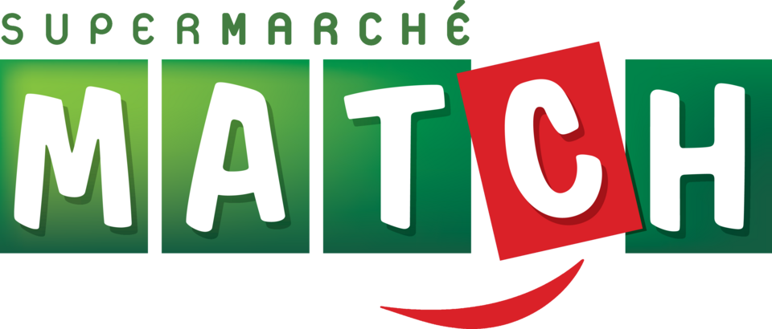

홈 > 브랜드 매거진 > Match
Match
마치(Match)는 1934년 벨기에에서 시작된, 프랑스·벨기에·룩셈부르크에서 운영되는 슈퍼마켓 체인이다.
산업 분야 리테일·커머스 · 공개 등급 자료 기반 · 브랜드 평가 4.1 ★

한눈에 보는 브랜드
마치(Match)는 프랑스 북동부와 벨기에를 무대로 성장한 유럽의 근린형 식료품 슈퍼마켓 브랜드로, 동명의 데이팅앱·축구 매체와 구분되는 정통 유통 간판이다. 뿌리는 1875년 벨기에 상인 루이 들레즈가 세운 루이 들레즈 그룹으로, 마치 간판 자체는 1934년 벨기에에서 처음 등장했다.
1977년 루이 들레즈 그룹이 쿠르테우 계열의 셀프서비스 점포를 인수하며 본격 편입됐고, 1990년 프랑스 알자스·로렌·북동부에 흩어져 있던 여러 이름의 슈퍼마켓을 마치라는 단일 간판으로 통합한 것이 결정적 전환점이었다. 프랑스에서 약 115개 점포와 4개 물류센터를 운영하며 2023년 매출 약 13억 3천만 유로, 종업원 약 5,300명 규모에 이르렀다.
브랜드 관점
마치의 본질은 대형 하이퍼마켓이 아니라 동네 밀착형 중형 슈퍼라는 점에 있다. 들레즈 가문이 19세기에 개척한 succursalisme(중앙 창고에서 다수 지역 점포로 효율 배송하는 체인망 모델)을 계승해, 광역 전국망보다 그랑테스트·오드프랑스라는 특정 권역에 자원을 집중하는 지역 밀도 전략을 택했다.
신선·전통 매대(정육·생선·치즈 등)를 'zone marché'로 묶어 미식과 품질을 전면에 내세우고, 지역 생산자 직거래와 로컬 상품 소싱으로 대형 할인점과 차별화했다. 경쟁 구도에서 마치는 단독으로 전국 1·2위를 다투기보다 자매 브랜드 코라(하이퍼마켓)와 보완 관계를 이루며 권역 강자로 버텼다.
한국 독자에게 이는 이마트·롯데마트 같은 전국 대형마트와, 특정 상권을 파고드는 동네 슈퍼·SSM의 구도에 대입하면 이해가 쉽다. 즉 규모의 경제가 아닌 권역 점유율과 신선식품 경쟁력으로 살아남은 사례이며, 최근 대형 유통사로의 흡수는 유럽 식품 소매 재편의 압력을 보여준다.
시작과 성장
마치의 시대 배경은 19세기 후반 벨기에 유통 혁신기로 거슬러 올라간다. 1867년 들레즈 가문이 벨기에에서 체인 소매(succursalisme)를 구상했고, 형제 중 한 갈래는 '사자(Le Lion)' 들레즈 형제 그룹을, 또 다른 인물 루이 들레즈는 1875년 샤를루아 인근 랑사르에서 자신의 회사를 세워 훗날 코라·마치를 거느릴 루이 들레즈 그룹의 모태를 만들었다.
1908년 들레즈 가의 인물들이 프랑스로 건너가 릴·낭시·스트라스부르를 거점으로 세 회사를 세우며 프랑스 진출의 토대를 닦았다. 첫 번째 전환점은 1934년 벨기에에서 마치 간판이 처음 등장한 것이고, 1960년대 프랑스 북부에 슈퍼마켓 포맷이 도입되며 현대적 매장 형태를 갖췄다.
두 번째 결정적 전환점은 1990년으로, 알자스·로렌·북동부에 제각각 다른 이름으로 흩어져 있던 슈퍼마켓들을 마치라는 하나의 간판으로 통합해 권역 브랜드로 재탄생시켰다. 벨기에에서는 1977년 쿠르테우 계열 점포 인수가, 이후 룩셈부르크·프랑스로의 확장과 1994년 현지 조직 개편이 외형을 키웠다.
이렇게 한 가문의 체인 실험이 한 세기를 거쳐 프랑스·벨기에 양국의 근린 슈퍼 네트워크로 자라났다.
브랜드 아이덴티티
마치의 핵심 가치는 가까움과 신선함이다. 비주얼 아이덴티티는 굵고 단정한 워드마크 중심으로, 2012년 리뉴얼에서 글자에 광택감을 더하고 'supermarché'의 끝 's'를 떼어내 '당신(고객)의 슈퍼마켓'이라는 친근함을 강조하며 'c'를 더 짙고 강하게 다듬었다.
타깃은 권역 내 일상 장보기를 하는 가족·지역 주민으로, 거대 할인점보다 가까운 거리에서 질 좋은 신선식품을 사려는 수요다. 브랜드 보이스는 미식·품질·지역성을 앞세운 따뜻하고 신뢰감 있는 어조이며, 'valeur sûre(확실한 가치)' 라벨로 품질 보증 메시지를 일관되게 전한다.
로컬 생산자 직거래와 친환경·지역 경제 기여를 강조해 대형 체인과 다른 동네 단골 슈퍼의 정서를 구축했다.
제품과 서비스
취급 품목은 식품을 중심으로 정육·생선·치즈 등 전통 신선 매대를 'zone marché'로 묶어 강조하며, 자매 하이퍼마켓 코라와 공유하는 자체 브랜드(Influx, Winny, Patrimoine Gourmand 등)와 'valeur sûre' 라벨 상품 약 1,500종을 갖췄다. 매장 포맷은 중형 슈퍼마켓이 핵심이며 일부 점포는 주유소를 병설한다.
채널은 오프라인 매장에 더해 드라이브(픽업)와 배송 서비스, 지역 상품 직거래를 운영한다.
현재 상태
본사·지배구조는 변동의 한복판에 있다. 마치는 본래 벨기에·프랑스계 루이 들레즈 그룹 소속으로 코라·스마치와 함께 운영됐으나, 그룹은 2023년 식품 소매 철수를 선언하고 국가별로 매각했다.
프랑스에서는 코라 하이퍼마켓과 마치 슈퍼마켓 등을 약 10억 5천만 유로(엔터프라이즈 가치)에 카르푸가 인수해 2024년 7월 1일 거래를 마무리했으며, 마치 간판은 북동부에서의 높은 인지도를 살려 카르푸 마켓과 병존하는 형태로 유지·강화하기로 했다. 벨기에에서는 2023년 9월 콜라위트 그룹이 마치·스마치 점포들을 인수해 임시 간판 Comarché를 거쳐 Spar·Okay·콜라위트 등 자사 브랜드로 2027년까지 단계 전환 중이다.
룩셈부르크 사업은 E.Leclerc로 넘어갔다. 따라서 현재 마치는 독립 그룹의 간판이 아니라, 프랑스에서는 카르푸 산하에서 권역 브랜드로 존속하고 벨기에에서는 콜라위트 산하 브랜드로 흡수·소멸 단계에 있다.
타임라인
정리된 연도형 이벤트가 없습니다.
BI/CI 변천사
함께 읽을 브랜드
 리테일·커머스 · 자료 기반이마트
리테일·커머스 · 자료 기반이마트이마트(emart)는 신세계그룹이 1993년 설립한 대한민국 최대 규모의 대형 할인마트 체인이다.
 리테일·커머스 · 자료 기반롯데마트
리테일·커머스 · 자료 기반롯데마트롯데마트(Lotte Mart)는 롯데쇼핑이 운영하는 대형마트 체인으로, 1998년 서울에 1호점을 열었다.
CU
CU
리테일·커머스 · 자료 기반CUCU(씨유)는 BGF리테일이 운영하는 한국 1위 편의점 체인으로, 2012년 패밀리마트에서 독자 브랜드로 전환했다.
 리테일·커머스 · 자료 기반Globus
리테일·커머스 · 자료 기반Globus글로부스(Globus)는 1828년 독일에서 시작한 하이퍼마켓(대형마트) 체인이다. 자를란트에 본사를 둔 브루흐 가문의 가족기업으로 식품·DIY·전자제품을 아우른다.
 리테일·커머스 · 자료 기반Perekryostok
리테일·커머스 · 자료 기반Perekryostok페레크료스토크(Perekrestok)는 1994년 모스크바에서 시작된 X5 그룹 산하의 러시아 슈퍼마켓 체인이다.
St
Standaard Boekhandel
리테일·커머스 · 자료 기반Standaard Boekhandel스탄다르트 부크한덜(Standaard Boekhandel)은 1919년 벨기에에서 시작한 서점 체인이다. 도서를 중심으로 음반·문구 등으로 다각화한 벨기에 최대 서점...
 리테일·커머스 · 매거진 완성유니클로
리테일·커머스 · 매거진 완성유니클로유니클로는 패션을 유행의 장식이 아니라 생활을 구성하는 공산품처럼 다룬다. 브랜드의 힘은 화려한 스타일보다 베이직, 품질, 가격, 운영 시스템을 일관되게 정렬하는 데...
Fl
Flaum
리테일·커머스 · 편집 검수FlaumFlaum는 2025년에 기록된 Shoppy Shop Brands 계열의 브랜드 아이덴티티 사례입니다. M/OTG가 아이덴티티 작업의 디자이너로 기록되어 있습니다....